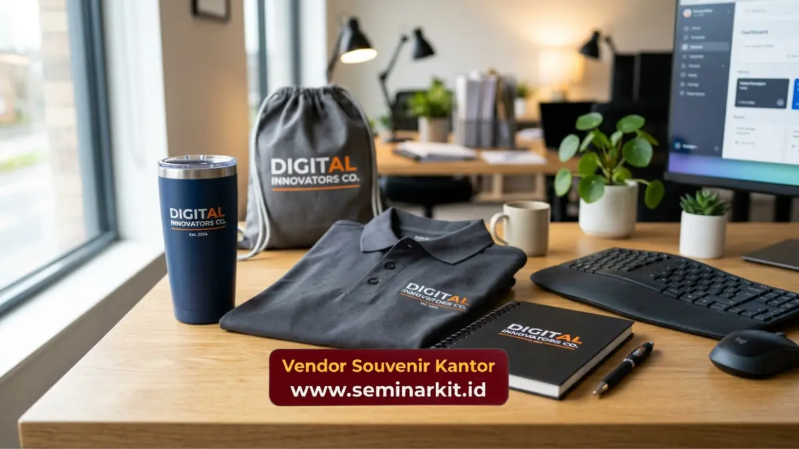

Manfaat merchandise karyawan bagi perusahaan meliputi penguatan loyalitas tim, peningkatan rasa memiliki terhadap perusahaan, serta memperkuat branding internal secara konsisten.
Barang berlogo yang digunakan sehari-hari menjadi pengingat visual terhadap identitas dan nilai perusahaan. Manfaat ini menjadikan merchandise karyawan sebagai investasi non-finansial yang strategis bagi organisasi.
- Merchandise karyawan memperkuat rasa memiliki terhadap perusahaan secara berkelanjutan.
- Barang berlogo berfungsi sebagai media branding internal yang konsisten setiap hari.
- Program merchandise dapat menjadi bentuk apresiasi non-finansial yang efektif.
- Merchandise turut memperkuat kekompakan tim pada momen-momen tertentu.
- Konsistensi kualitas merchandise memengaruhi persepsi profesionalisme perusahaan di mata karyawan.
Apa Manfaat Utama Merchandise Karyawan bagi Perusahaan
Manfaat utama merchandise karyawan adalah memperkuat identitas brand secara internal sekaligus menjadi bentuk apresiasi non-finansial terhadap kontribusi tim.
Barang berlogo yang dipakai berulang kali menciptakan pengulangan visual yang memperkuat ingatan karyawan terhadap nilai dan budaya perusahaan.
Selain manfaat branding, merchandise karyawan juga berperan sebagai simbol pengakuan yang dapat diberikan tanpa harus selalu berbentuk insentif finansial, sehingga menjadi opsi yang lebih fleksibel bagi perusahaan dalam menjalankan program apresiasi tim.
Pada organisasi dengan struktur besar, merchandise karyawan turut membantu menyamakan persepsi identitas brand di antara karyawan lintas divisi maupun lintas cabang, terutama saat perusahaan sedang melakukan penguatan budaya kerja secara menyeluruh.
Bagaimana Merchandise Karyawan Memengaruhi Employee Engagement
Merchandise karyawan memengaruhi employee engagement dengan menciptakan pengalaman emosional positif terhadap perusahaan melalui simbol fisik yang dapat digunakan sehari-hari.
Pengalaman ini secara tidak langsung memperkuat keterikatan psikologis karyawan terhadap organisasi tempatnya bekerja.
Ketika karyawan merasa dihargai melalui pemberian merchandise yang relevan dan berkualitas, tingkat kepuasan kerja cenderung meningkat, yang pada akhirnya berdampak pada produktivitas dan konsistensi kontribusi terhadap tim.
Program merchandise yang diberikan secara konsisten pada momen-momen penting, seperti pencapaian target atau hari jadi perusahaan, juga membantu membangun ritme apresiasi yang terstruktur dalam budaya kerja organisasi.
Mengapa Merchandise Karyawan Penting untuk Branding Internal
Merchandise karyawan penting untuk branding internal karena menjadi media komunikasi visual yang konsisten tanpa memerlukan interaksi verbal langsung dari manajemen.
Logo dan identitas visual perusahaan hadir secara alami dalam aktivitas harian karyawan melalui barang yang mereka gunakan.
Branding internal yang kuat melalui merchandise turut membantu menciptakan keseragaman persepsi karyawan terhadap nilai-nilai perusahaan, terutama pada organisasi yang sedang menjalani proses ekspansi atau perubahan struktur tim dalam skala besar.
Selain itu, merchandise karyawan yang dibawa keluar lingkungan kantor turut memperluas eksposur brand secara alami di ruang publik, tanpa memerlukan biaya tambahan untuk aktivitas promosi formal.

Dampak Merchandise Karyawan terhadap Kekompakan Tim
Merchandise karyawan turut memperkuat kekompakan tim, khususnya saat dibagikan pada momen kolektif seperti gathering, outing, atau perayaan pencapaian bersama.
Penggunaan barang berlogo yang sama secara visual menciptakan simbol identitas kolektif di antara anggota tim.
Simbol identitas kolektif ini membantu memperkuat rasa kebersamaan, terutama pada tim dengan anggota yang bekerja secara hybrid atau tersebar di berbagai lokasi kerja, di mana interaksi tatap muka tidak selalu dapat dilakukan secara rutin.
Pada acara-acara internal, merchandise seragam turut menciptakan kesan profesional dan terorganisir, yang secara tidak langsung memperkuat citra perusahaan di mata karyawan maupun pihak eksternal yang turut hadir dalam acara tersebut.
Bagaimana Kualitas Merchandise Karyawan Berhubungan dengan Persepsi Profesionalisme
Kualitas merchandise karyawan berhubungan langsung dengan persepsi profesionalisme perusahaan, karena barang yang cepat rusak atau tampilan logo yang kurang presisi dapat menimbulkan kesan kurang serius terhadap program apresiasi yang dijalankan.
Pemilihan bahan yang tepat serta teknik cetak logo yang presisi menjadi faktor penentu agar merchandise tetap terlihat profesional dalam jangka waktu yang lama, sekaligus memperkuat manfaat branding yang ingin dicapai perusahaan.
Untuk memastikan kualitas merchandise karyawan perusahaan Anda tetap konsisten dan mencerminkan profesionalisme brand, kunjungi vendorsouvenirkantor.web.id dan konsultasikan kebutuhan produksi merchandise custom logo Anda.
Merchandise karyawan memberikan manfaat ganda bagi perusahaan, yaitu memperkuat branding internal sekaligus meningkatkan loyalitas dan keterikatan tim.
Kualitas bahan dan presisi logo menjadi faktor penting agar manfaat tersebut tercapai secara optimal.
Wujudkan program merchandise karyawan yang berkualitas untuk perusahaan Anda melalui vendorsouvenirkantor.web.id.

Banner promosi: klik gambar untuk langsung terhubung ke WhatsApp tim sales.